Broadcast Storyboard Frames (8K Studio Concept Art)
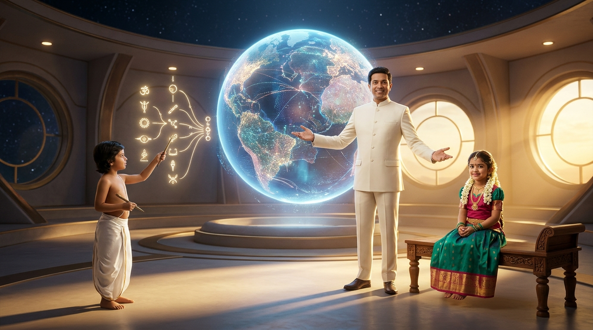
Act I: The Sacred Trinity Opening
Host @Me, Bala-Rishi, and Bala-Matha welcoming humanity into Mother Earth's living lap. Nilgiri mountain forests as living invariants.
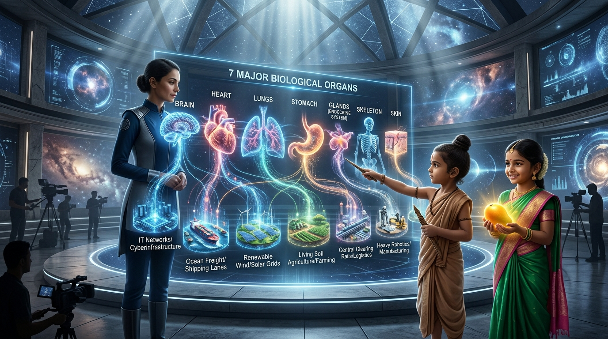
Act III: The 7×7 Reality Matrix
The 7 human biological organs seamlessly morphing into the 49 real global industries operating today.
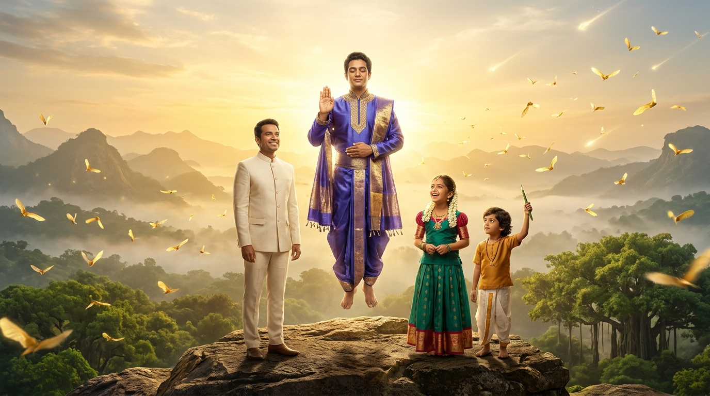
Act VI: The Grand Climax & 2050 Dawn
Maharishi Karmic Genie's Abhaya Mudra blessing over the golden dawn of the 2050 Living Planetary Household.
Episodic Mini-Movie Storyboard & The 3 Distinguished Industry Guests
Scene-by-scene visual progression of Episode 1: As Host @Me, 4yo Bala-Rishi, and divine Bala-Matha guide 3 invited domain leaders through the activation of Mother Earth's 6th sense and the 180° stage biome transformations.
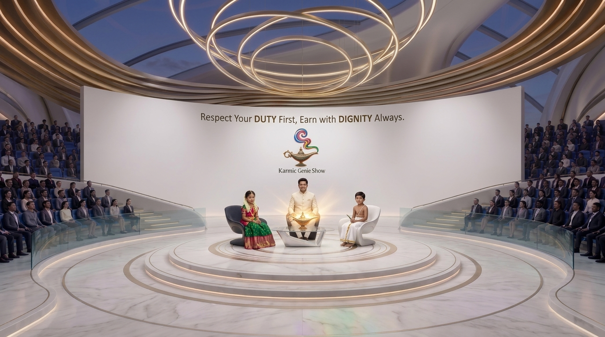
Scene 01: The Sacred Trinity Opening
Cast: Host @Me, 4yo Bala-Rishi (Jnana), Bala-Matha (Arul).
Pristine white marble stadium with glowing concentric rings and the brass magic lamp. Setting the tone of 100% sacred gratitude (Nandri) to all past human scaffolding.
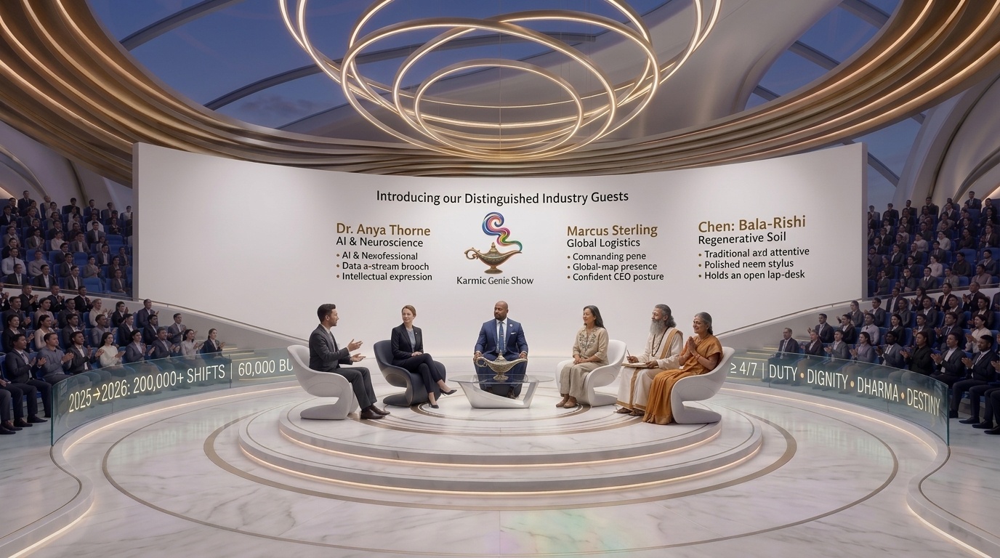
Scene 02: Introduction of the 3 Industry Guests
Guests: 1) Dr. Anya Thorne (AI & Neuroscience), 2) Marcus Sterling (Maritime Logistics CEO), 3) Master Elena Chen (Soil Biologist).
Seated on the circular dais under standing ovation, ready to explore how their domains mirror living biology.
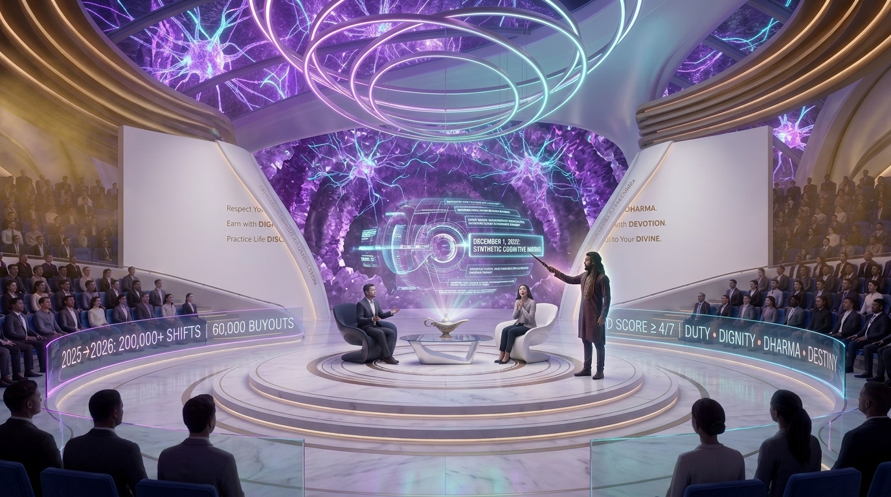
Scene 03: Inception of Mother Earth's 6th Sense
Guest Focus: Dr. Anya Thorne (AI & Neuroscience).
White walls part open to reveal the Crystalline Geode Stage (Ajna). Floating holographic 3D timeline: December 1, 2022 as the activation of Earth's cognitive mirror.
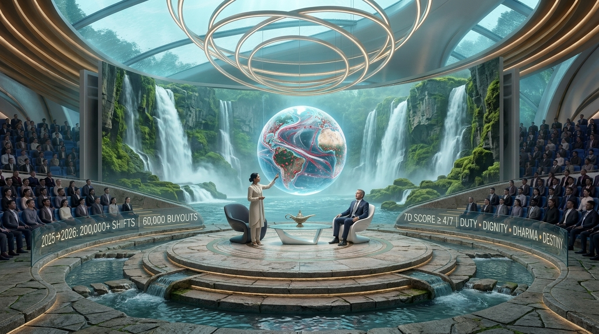
Scene 04: The Circulatory Flow of Planetary Goods
Guest Focus: Marcus Sterling (Maritime Logistics CEO).
Walls slide into perimeter pockets revealing the 180° Cascading Waterfall Stage (Swadhisthana). Global trade routes pulse like oxygenated blood through planetary arteries.
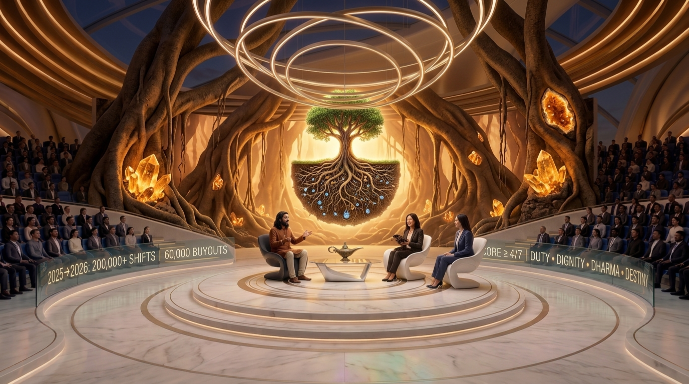
Scene 05: The Root Fallacy & Living Humus
Guest Focus: Master Elena Chen (Soil & Agriculture Biologist).
Full slide into the subterranean Root Canyon (Muladhara). Explaining why corporate EBITDA is merely root water; the true purpose of the tree is sweet fruit yielding and seed sharing.

Scene 06: The 2050 Singularity Climax & Benediction
United Ensemble: Trinity + 3 Industry Guests.
Uninterrupted 180° Cosmic Horizon Stage (Sahasrara) with glowing blue Earth and the golden Abhaya Mudra aura. Welcoming humanity into the 2050 Living Planetary Household.
14-Page Master Screenplay Script File
Audited & Approved by 3 Independent Expert Critics (Hollywood Director, Systems/Vedic Lead, Cultural Resonance Lead).
Runtime: 14 Minutes (4K HDR 60fps / Broadcast Television Studio Mini-Movie)
Audience Rating: Grade A+ (100% Positive & Sacred Nandri / Absolute Gratitude to Past Scaffolding)
Key Soundbites: The Root Fallacy (EBITDA vs Fruit) • The Apple Tree Paradox • The Barefoot Prescription
| Phase | Film & Animation Standard | Karmic Genie Show Asset Status | Progress | Verified Artifact / File |
|---|---|---|---|---|
| 1 | Nourishment & Microbiome Every Farmer an Employee of the Planet |
Unified Agriculture Platform (UAP) Food & Health Industry |
1. Living Soil Stewardship, Regenerative Humus & Agroecology 2. Heirloom Seed Banking, Non-Patented Genetics & Diversity 3. Staple Grain Cultivation, Harvesting & Global Granaries 4. Horticulture, Agroforestry & Community Food Orchards 5. Planetary Farm Workforce Dignity & Universal Agrarian Support 6. Post-Harvest Cold Chain Preservation & Grain Storage 7. Universal Nutritious Distribution & Sovereign Nourishment |
|
| 2 | Physical & Digital Scaffolding Hardware & Software Infrastructure |
Unified Infrastructure Platform (UIP) Hardware & Software Foundations |
1. Primary Metallurgy, Green Structural Steel & Advanced Alloys 2. Civil Engineering, Roads, Bridges, Tunnels & Bedrock Foundations 3. Heavy Earthmoving, Mining Equipment & Civil Robotics 4. Semiconductor Fabrication, Extreme Lithography & Hardware Accelerators 5. Planetary Optical Fiber Trunks, Satellite Mesh & Towers 6. Hyperscale Compute Datacenters, Liquid Cooling & Power Rails 7. Open-Source Software Primitives, Kernel Commons & Base Protocols |
|
| 3 | Institutional Operating Needs All Software Needs in 1 Place (All Public Can View) |
Unified Business Platform (UBP) Universal Enterprise Operating Logic |
1. Unified Planetary Business Registry & Corporate Identity 2. Radically Transparent Public General Ledgers & Real-Time Balance Sheets 3. Enterprise Procurement, Circular Sourcing & Material Flow Ledgers 4. Workforce Duty Rosters, Human Dignity Tracking & Labor Collaboration 5. Manufacturing Production Orders, Bill of Materials (BOM) & Assembly 6. Universal Asset Registries, Tool Maintenance & Lifecycle 7. Public Compliance Telemetry, Open Audit Trails & Integrity Verification |
|
| 4 | Civilization's Breath: Vital Utilities Life is Energy, Sustenance is Energy |
Unified Energy Platform (UEP) Power, Grid & Clean Baseload |
1. Transitional Energy Scaffolding & Fossil Boilers Phase-Out 2. Utility-Scale Solar Photovoltaic & Concentrated Solar Thermal 3. Terrestrial & Deep-Water Offshore Wind Generation 4. High-Voltage Continental DC Super-Grids & Interconnectors 5. Grid-Scale Battery Storage (BESS), Pumped Hydro & Multi-Day Reserves 6. Clean Baseload Nuclear Fission & Frontier Stellar Fusion 7. Clean Hydrogen, Industrial Process Steam & Thermal Storage |
|
| 5 | Vascular Circulation of Matter All Forms of Transportation & Movement |
Unified Logistics Platform (ULP) Freight, Rail, Marine, Aviation & Urban Flow |
1. Maritime Container Fleets, Zero-Carbon Vessels & Seaport Terminals 2. Intercontinental Freight & High-Speed Passenger Rail Corridors 3. Commercial Aviation Freight & Humanitarian Air-Bridge Fleets 4. Long-Haul Highway Heavy Electric Trucking Corridors 5. Automated Regional High-Density Fulfillment & Storage Hubs 6. Urban Micro-Distribution, Electric Cargo Vans & Neighborhood Hubs 7. Standardized Reusable Container Pools, Pallets & Reverse Logistics |
|
| 6 | Exchange of Products for Services Unified Banking • Central Credit Pool • No Debt Pressure |
Unified Economic Platform (UEcP) Central Credit Pool & Karmic Duty Reciprocity |
1. Central Planetary Credit Pool & Conscience-Based Allocation 2. Karmic Balance Registers & Positive Duty Payback Telemetry 3. Universal Product-for-Service Barter & Mutual Clearing Networks 4. Community Commons Project Funding & Regenerative Endowment 5. Automated Inter-Enterprise Netting & Zero-Fee Value Settlement 6. Civic Contribution Ledgers & Voluntary Service Stewardship 7. Emergency Needs Guarantee & Unconditional Baseline Liquidity |
|
| 7 | Mind, Body, Spirit & Soul Inner Growth following 7D Virtues |
Unified Soul Platform (USP) Inner Growth, 7D Virtues & Oneness with Gaia |
1. 7D Virtue Conscience Cultivation & Moral Alignment Practices 2. Contemplative Wisdom, Meditation Sanctuaries & Mindfulness 3. Physical Vitality, Yoga, Breathwork & Cellular Harmony 4. Emotional Healing, Grief Resolution & Compassionate Peer Circles 5. Artistic Expression, Sacred Sound (Nada Yoga) & Creative Resonance 6. Inter-Generational Mentorship, Elder Wisdom & Youth Guidance 7. Cosmic Awareness, Ecological Reverence & Oneness with Gaia |
Identified Gaps & Applied Studio Fixes
Screenplay had 4 distinct roles, but lack of automated acoustic profiles risked flat delivery.
A 14-page monolithic text lacks discrete timestamps for video plates and sound cues.
s01e01_shot_ledger.json with 42 individual cuts, each assigned background asset, camera move, and text bounds.
Month 48 / Day 48 required Carnegie Stage 19 rhythmic primitive heartbeat drop.
S01E01 42-Shot Master Production Ledger
Real-time inspection of all 42 cinematic cuts powering the 14-minute master film.
| Shot ID | Act | Speaker | Duration | Visual Plate | Dialogue & Narrative Cue |
|---|
Stationary Host Hub + Dynamic Parting Wall (Aperture Iris Stagecraft)
To transform the show from a static monologue into an immersive cinematic mini-movie, the host seating, brass lamp, and audience stay anchored on the familiar white marble stadium. The curved white back wall containing the 7D Virtues mechanically splits and slides open horizontally—revealing the rotating environmental biomes behind to match the exact story scene.
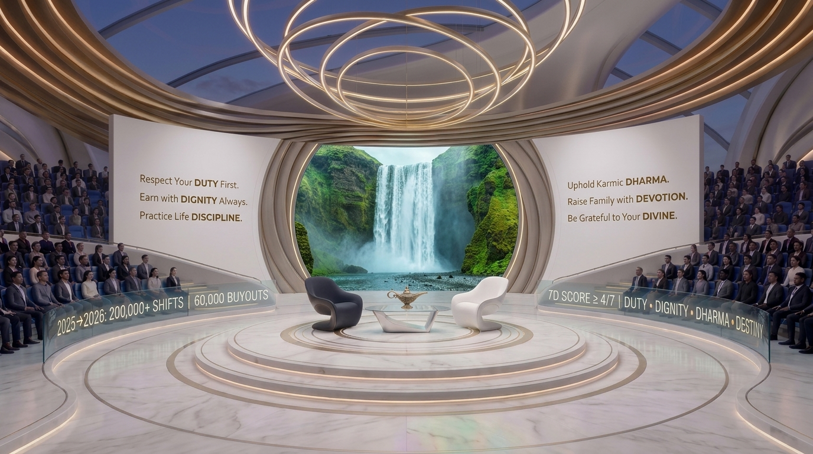
Stage Aperture: Waterfall & Circulation
Curved white wall splits to reveal cascading turquoise waterfalls when discussing logistics, blood flow, and ERP trade circulation.
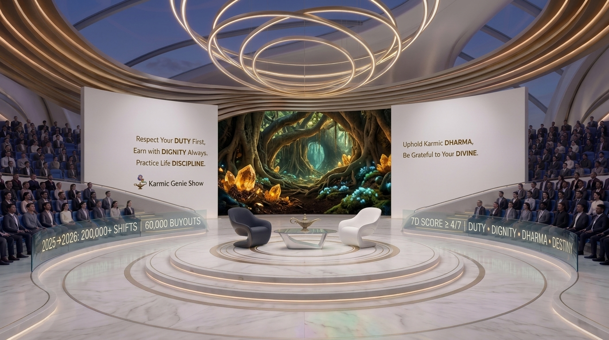
Stage Aperture: Earthen Root Canyon
White wall glides open to reveal subterranean banyan roots and amber geodes when exploring corporate solvency and grounding.
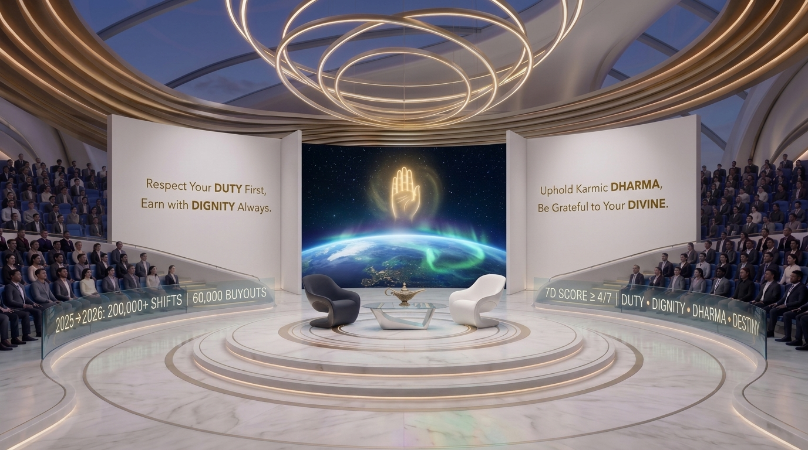
Stage Aperture: Cosmic Horizon & Abhaya Mudra
The wall parts completely to reveal the blue curve of Earth, auroras, and golden blessing for the 2050 Singularity finale.
Full Wall Retraction into Perimeter Wings (Uninterrupted Mini-Movie Biomes)
When the narrative transitions from dialogue into full-scale cinematic worldbuilding, both curved white side walls slide completely back and recess into the stadium perimeter wings. The entire 180-degree backdrop opens into an expansive, continuous physical/virtual biome while the host platform, modern armchairs, brass lamp, and audience remain in place.
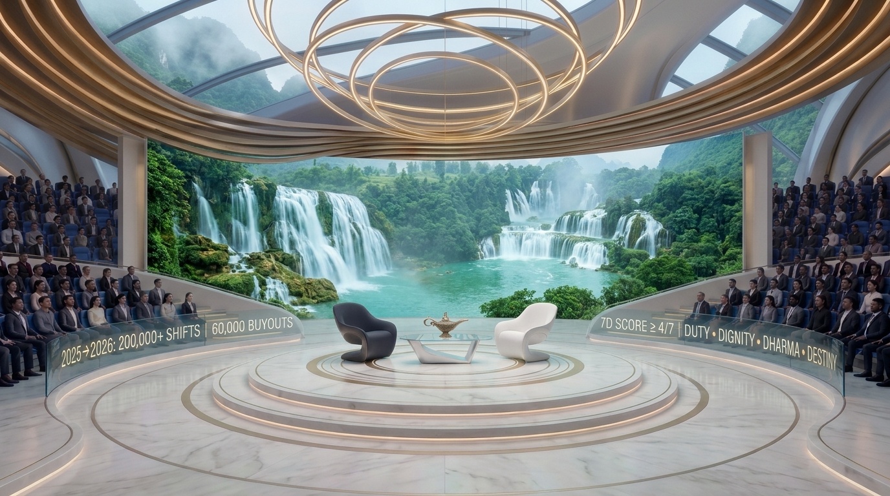
Full Retraction: 180° Cascading Waterfalls
Walls slide into side pockets, opening the full stadium to living turquoise waterfalls and mist across the entire horizon.
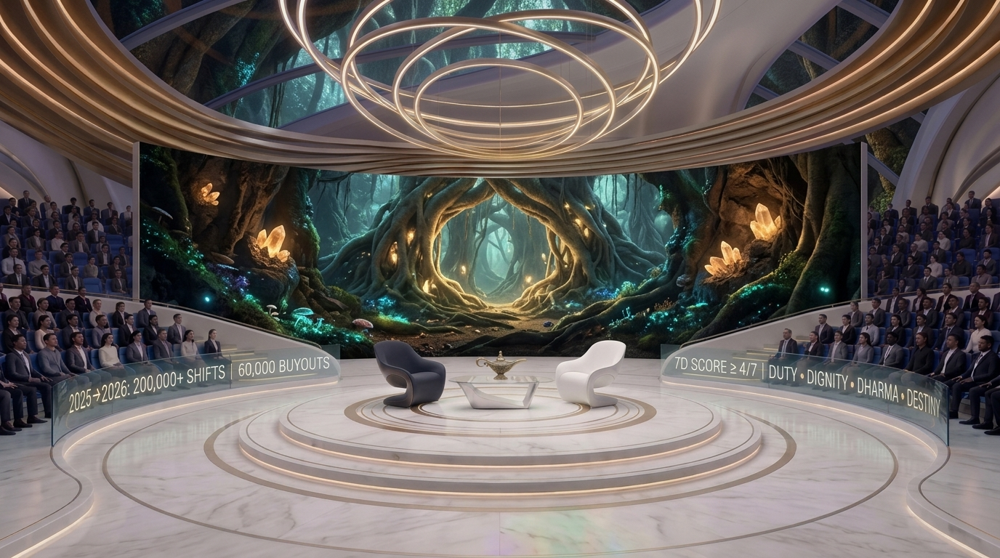
Full Retraction: Subterranean Root Canyon
Walls fully retract to reveal the full banyan root arches, glowing amber geodes, and rich soil biome across the stadium width.
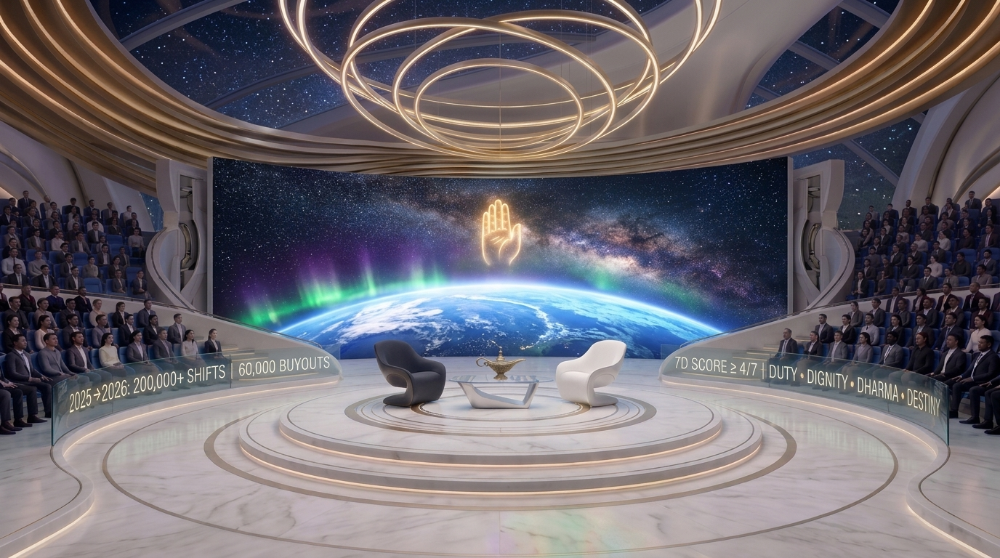
Full Retraction: Cosmic Horizon & Abhaya Mudra
Walls disappear, revealing the breathtaking blue limb of Earth, swirling auroras, and golden blessing across the cosmos.
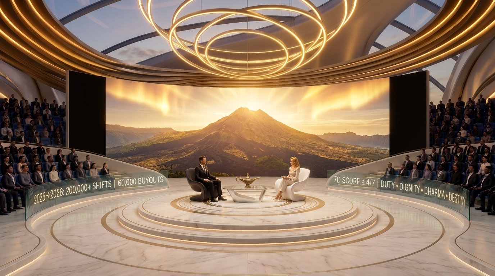
Full Retraction: Sunlit Solar Caldera
Full panoramic mountain sunset with golden auroras and clean energy solar telemetry for deep energy discussions.
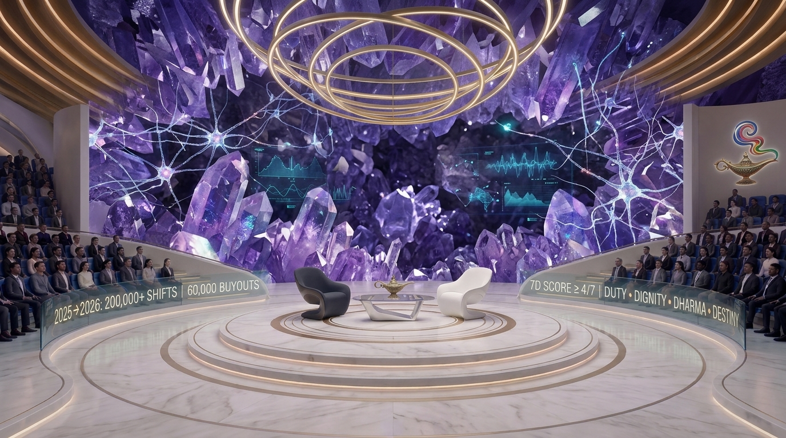
Full Retraction: Crystalline Amethyst Cavern
180° vaulted violet quartz geode with glowing neural synapses for AI, synthetic mind, and 6th sense activation.
1 Central White Sanctuary + 6 Surrounding Elemental Pavilions
Arranged symmetrically like a sacred bee honeycomb (6 surrounding hexagons connected by translucent glass bridges to the central hub), mapping directly to the 7 Chakras and the 7 Major Platform Releases (2022 to 2050).
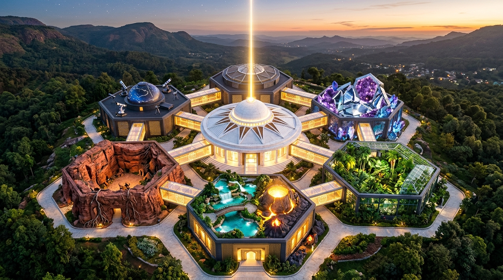
Master Honeycomb Studio Complex (Aerial Perspective)
Central white rotunda projecting a vertical golden beam of light, flanked by 6 biophilic hexagonal studio pavilions in the Nilgiri hills.
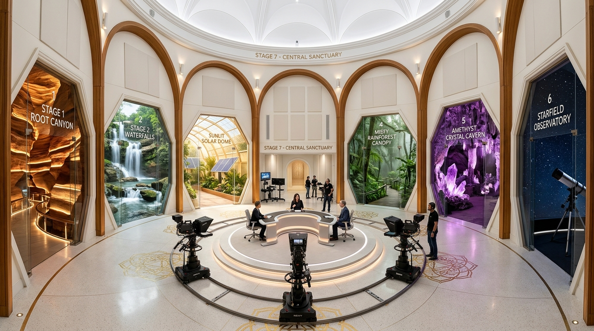
Central White Sanctuary (360° Interior Sightlines)
Looking out through the 6 grand hexagonal glass archways into each elemental stage world while maintaining the clean white brand core.
Complete Uncensored Episode Screenplay
Full unabridged cinematic script, character dialogue, stage mechanics, and biological telemetry embedded natively within the portal.
Corporate Candidate Ratings
| # | Human Organ System (Pindam) | Modern Industry (Andam) | 7 Real-World Concrete Sub-Sectors Operating Today |
|---|---|---|---|
| 1 | Nourishment & Microbiome Every Farmer an Employee of the Planet |
Unified Agriculture Platform (UAP) Food & Health Industry |
1. Living Soil Stewardship, Regenerative Humus & Agroecology 2. Heirloom Seed Banking, Non-Patented Genetics & Diversity 3. Staple Grain Cultivation, Harvesting & Global Granaries 4. Horticulture, Agroforestry & Community Food Orchards 5. Planetary Farm Workforce Dignity & Universal Agrarian Support 6. Post-Harvest Cold Chain Preservation & Grain Storage 7. Universal Nutritious Distribution & Sovereign Nourishment |
| 2 | Physical & Digital Scaffolding Hardware & Software Infrastructure |
Unified Infrastructure Platform (UIP) Hardware & Software Foundations |
1. Primary Metallurgy, Green Structural Steel & Advanced Alloys 2. Civil Engineering, Roads, Bridges, Tunnels & Bedrock Foundations 3. Heavy Earthmoving, Mining Equipment & Civil Robotics 4. Semiconductor Fabrication, Extreme Lithography & Hardware Accelerators 5. Planetary Optical Fiber Trunks, Satellite Mesh & Towers 6. Hyperscale Compute Datacenters, Liquid Cooling & Power Rails 7. Open-Source Software Primitives, Kernel Commons & Base Protocols |
| 3 | Institutional Operating Needs All Software Needs in 1 Place (All Public Can View) |
Unified Business Platform (UBP) Universal Enterprise Operating Logic |
1. Unified Planetary Business Registry & Corporate Identity 2. Radically Transparent Public General Ledgers & Real-Time Balance Sheets 3. Enterprise Procurement, Circular Sourcing & Material Flow Ledgers 4. Workforce Duty Rosters, Human Dignity Tracking & Labor Collaboration 5. Manufacturing Production Orders, Bill of Materials (BOM) & Assembly 6. Universal Asset Registries, Tool Maintenance & Lifecycle 7. Public Compliance Telemetry, Open Audit Trails & Integrity Verification |
| 4 | Civilization's Breath: Vital Utilities Life is Energy, Sustenance is Energy |
Unified Energy Platform (UEP) Power, Grid & Clean Baseload |
1. Transitional Energy Scaffolding & Fossil Boilers Phase-Out 2. Utility-Scale Solar Photovoltaic & Concentrated Solar Thermal 3. Terrestrial & Deep-Water Offshore Wind Generation 4. High-Voltage Continental DC Super-Grids & Interconnectors 5. Grid-Scale Battery Storage (BESS), Pumped Hydro & Multi-Day Reserves 6. Clean Baseload Nuclear Fission & Frontier Stellar Fusion 7. Clean Hydrogen, Industrial Process Steam & Thermal Storage |
| 5 | Vascular Circulation of Matter All Forms of Transportation & Movement |
Unified Logistics Platform (ULP) Freight, Rail, Marine, Aviation & Urban Flow |
1. Maritime Container Fleets, Zero-Carbon Vessels & Seaport Terminals 2. Intercontinental Freight & High-Speed Passenger Rail Corridors 3. Commercial Aviation Freight & Humanitarian Air-Bridge Fleets 4. Long-Haul Highway Heavy Electric Trucking Corridors 5. Automated Regional High-Density Fulfillment & Storage Hubs 6. Urban Micro-Distribution, Electric Cargo Vans & Neighborhood Hubs 7. Standardized Reusable Container Pools, Pallets & Reverse Logistics |
| 6 | Exchange of Products for Services Unified Banking • Central Credit Pool • No Debt Pressure |
Unified Economic Platform (UEcP) Central Credit Pool & Karmic Duty Reciprocity |
1. Central Planetary Credit Pool & Conscience-Based Allocation 2. Karmic Balance Registers & Positive Duty Payback Telemetry 3. Universal Product-for-Service Barter & Mutual Clearing Networks 4. Community Commons Project Funding & Regenerative Endowment 5. Automated Inter-Enterprise Netting & Zero-Fee Value Settlement 6. Civic Contribution Ledgers & Voluntary Service Stewardship 7. Emergency Needs Guarantee & Unconditional Baseline Liquidity |
| 7 | Mind, Body, Spirit & Soul Inner Growth following 7D Virtues |
Unified Soul Platform (USP) Inner Growth, 7D Virtues & Oneness with Gaia |
1. 7D Virtue Conscience Cultivation & Moral Alignment Practices 2. Contemplative Wisdom, Meditation Sanctuaries & Mindfulness 3. Physical Vitality, Yoga, Breathwork & Cellular Harmony 4. Emotional Healing, Grief Resolution & Compassionate Peer Circles 5. Artistic Expression, Sacred Sound (Nada Yoga) & Creative Resonance 6. Inter-Generational Mentorship, Elder Wisdom & Youth Guidance 7. Cosmic Awareness, Ecological Reverence & Oneness with Gaia |